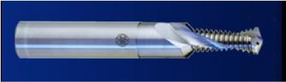

OBJECTIVESThe drilling process followed by threading is generally very applied in industry.
Aiming specially fabrication costs reducing, the drilling and internal milling
process (Bohrgewinde-fräsen) was developed. This process uses an only
tool, which executes drilling, reaming and, in sequence, threading.  Magnesium has a growing importance in industry, specially
due to its low weight (2/3 of aluminum’s weight). PROCEDURESThe magnesium adhesion on the tool during dry machining causes a few problems
that compromise the use of this process in threads. A tool premature break
usually occurs due to drill flute blockage. Through assays and results analysis it will be possible to identify the tool break causes, providing a direct performance on the problems and, consequently, the process optimization. It becomes viable, thus, this process implement on industrial scale. RESULTSThe expected results will be useful for the threads fabrication process to become more well-known and to be applied securely and with good productivity with better scientific fundament. It is expected, also, for this research to be the beginning and the basis
for future developments on drilling and threading areas, always aiming
ecological
machining and new technologies development. Cooperation |